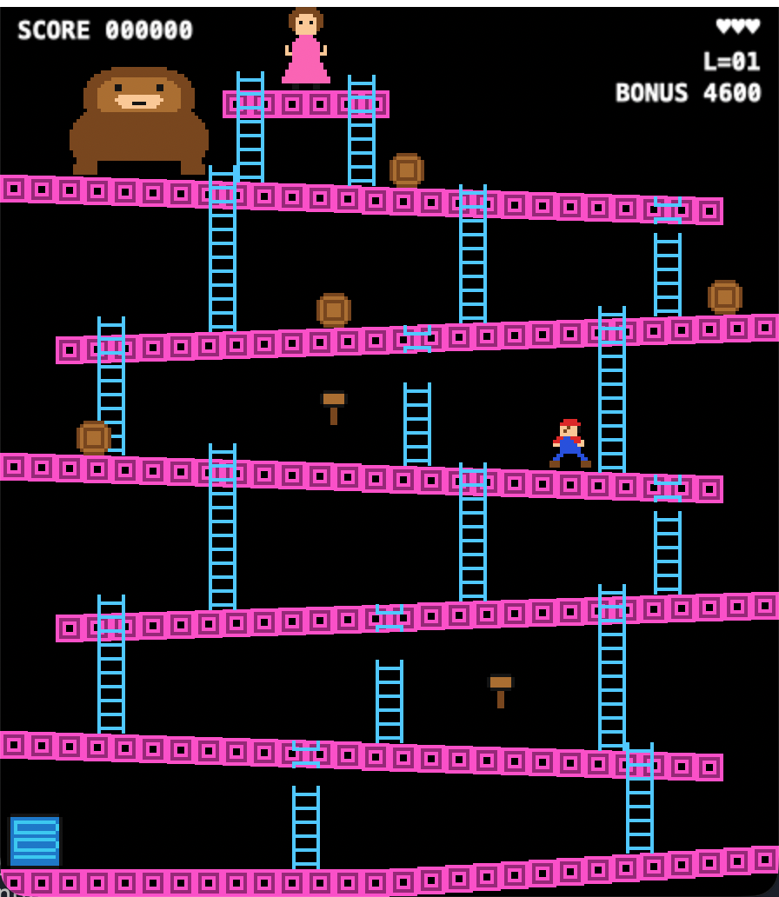
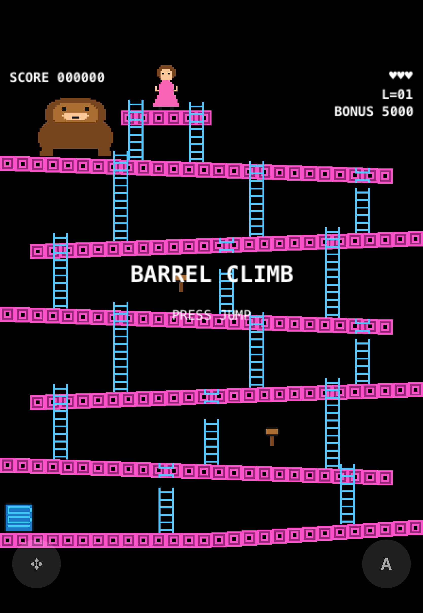

Barrel Climb
Six sloping girders, a rain of barrels, two hammers and a rescue at the top.
An original arcade platformer for your Mac and your iPhone — including the iPhone Duo, folded or open.

What it is made of
- TESTS
- 76Every rule below is pinned by one.
- STEP
- 1/60 sFixed. The simulation is a pure function.
- SCREEN
- 224x256Logical points, scaled to fit anything.
- DEPENDENCIES
- 0Art and audio generated by two scripts.
How it plays
| ACTION | MAC | CONTROLLER | IPHONE |
|---|---|---|---|
| Walk, climb | Arrow keys or WASD | D-pad or left stick | Left pad |
| Jump, start | Space | A | Right button |
Barrels roll down every girder and pick a ladder at random. Jump one for 100 points; touch one and you lose a life. A ladder is no shelter.
Two hammers hang on the way up. Nine seconds of swinging, 300 a barrel — but you can neither jump nor climb while you hold one.
Every eighth barrel is blue. Let it reach the oil drum and a fireball climbs out to hunt you. Fireballs use the ladders too.
Five of the sixteen ladders are broken and stop halfway. You can start up them; you cannot get out that way.
Reach the platform at the top before the bonus hits zero. Then it all starts again, faster.
On a phone, and on a folding one


Under the hood
The game is a pure function
The simulation is a Swift package that imports no UI framework, no clock and no system random source. It advances by exactly 1/60 s from an input struct and a seeded random source, and hands back the list of things that happened. That is why 76 deterministic tests cover every rule on this page and finish in hundredths of a second, without ever opening a window.
The screen only mirrors it
One SpriteKit scene of 224 x 256 logical points copies the world into sprite nodes after each step and turns the returned events into sound. It never owns game state. Fitting that picture to the display is a single setting, which is the entire foldable-phone support, and one Xcode target covers macOS and iOS from one generated project.
Build it
You need Xcode 27 and XcodeGen. No signing setup, no developer account.
-
Clone it.
git clone https://github.com/vincentlauriat/barrel-climb.git cd barrel-climb -
Play it on your Mac.
make run-mac -
Or put it in the iPhone Simulator.
make build-ios xcrun simctl install booted \ build/DerivedData/Build/Products/Debug-iphonesimulator/DonkeyKong.app xcrun simctl launch booted fr.lauriat.DonkeyKong -
Poke at it. The tests need no simulator, and the art, audio and icon all regenerate from source.
make test make sprites sounds icon